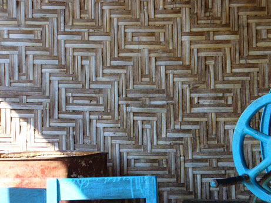

Bamboo Homes in Myanmar
|  At last in 2005 the opportunity to travel in Southeast Asia returns. Southern China is visited, followed by Laos and Thailand. Bamboo panels are spotted occasionally while traveling by bus or train, but most are a simple woven pattern. Myanmar is next on the itinerary, where the mystery began to unravel. Lots of bamboo construction is seen, not all of the simple designs. These three shots are taken while climbing Mandalay Hill. Can you see the double diamond pattern in the upper right photo? |
|
| Then on the way to Bagan, a side trip to Mt. Popa greets me with a beautiful double diamond pattern on the front of a shop. A welcome walk from the guest house permitted some photos that evening, but I decided to return the next afternoon to get shots in daylight. | Several more photos are taken while walking through town. It has become obvious that intricate bamboo designs are woven in Myanmar as well as on the island of Flores in Indonesia. |
 |

| next: Bamboo Homes in Bagan |
| back: Bamboo Mystery | ||
| Other Special Subjects: |